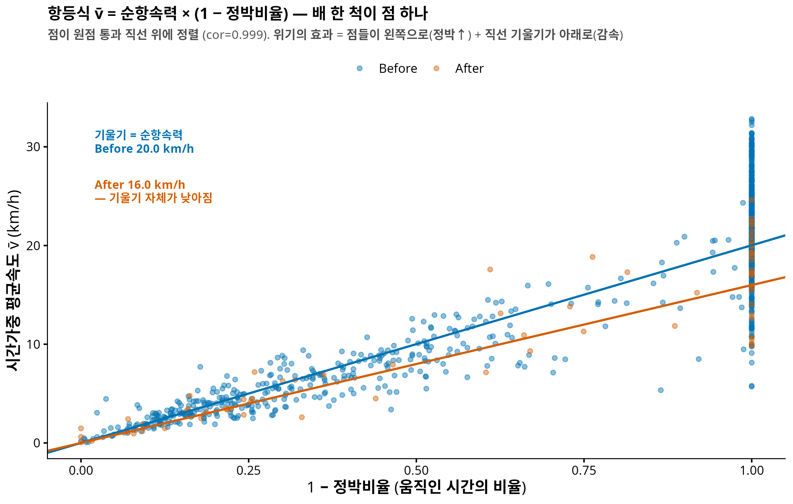
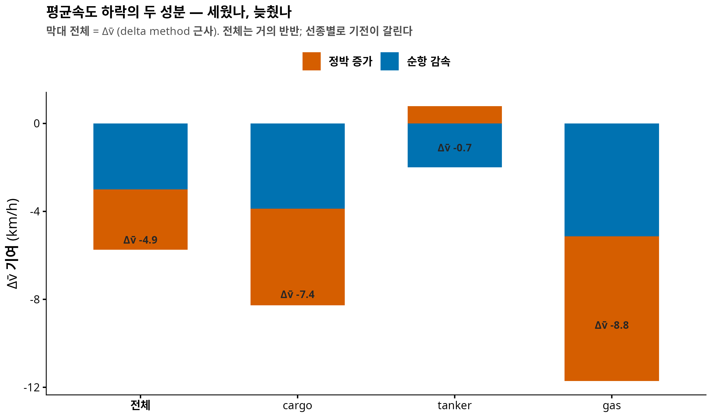

연구 ▷ 호르무즈 ▷ 세웠나, 늦췄나 — 평균속도의 해부
0. 한 줄 요약
위기 이후 평균속도가 5 km/h 떨어졌다는 사실은 알고 있었다. 이번에 밝힌 것은 그 하락의 성분이다. 항등식 \(\bar v = \mu_c (1 - S)\) — 평균속도 = 순항속력 × 움직인 시간 비율 — 로 분해하면, 하락의 48%는 정박 증가, 52%는 순항 중 감속. 위기는 배를 세워놓기만 한 게 아니라 움직일 때도 20% 느리게 만들었다. 그리고 선종별로 기전이 완전히 갈린다 — tanker 는 총량으로는 아무 변화가 없어 보였지만(Δv̄ = −0.7, 비유의), 분해하니 정박 감소와 순항 감속이 상쇄되어 숨어 있던 것이었다.
선행: 3-수준 분해 팟캐스트 — 운동학 채널의 τ 가 이 글의 무대다.
1. 질문 — “−5 km/h”는 무엇이었나
이전 분석은 두 숫자를 따로 보고했다: 평균속도 −5 km/h (\(p<10^{-4}\)), 정박 시간비율 +0.14 (\(p=0.003\)). 그런데 이 둘은 논리적으로 얽혀 있다 — 배가 서 있으면 평균속도는 당연히 떨어진다. 그래서 진짜 질문은:
평균속도 하락은 전부 정박 탓인가, 아니면 배가 움직일 때도 느려졌는가?
2. 항등식 — 유도는 세 줄
시간가중 평균속도의 정의에서 시작한다. 항해 시간을 정박(\(v < 5\) km/h)과 순항으로 나누면:
\[\bar v \;=\; \frac{\int v\, dt}{T} \;=\; \frac{\int_{\text{순항}} v\, dt}{T} \;=\; \underbrace{\frac{\int_{\text{순항}} v\, dt}{T_{\text{순항}}}}_{\mu_c \;(\text{순항속력})} \times \underbrace{\frac{T_{\text{순항}}}{T}}_{1 - S}\]
(첫 등호에서 정박 구간의 \(v \approx 0\) 기여를 무시 — 정확히는 임계 이하 잔여항.) 즉 평균속도 = 순항속력 × 움직인 시간 비율. 배 한 척마다 \((\bar v_i, S_i, \mu_{c,i})\) 를 계산해 검증하면:

상관 0.999 — 항등식이 데이터에서 그대로 성립한다. 그러면 시기 간 변화도 정확히 두 성분으로 갈라진다 (delta method):
\[\Delta \bar v \;\approx\; \underbrace{-\,\mu_c \cdot \Delta S}_{\text{정박 증가 기여}} \;+\; \underbrace{(1 - \bar S) \cdot \Delta \mu_c}_{\text{순항 감속 기여}}\]
3. 결과 — 반반, 그리고 예측의 반증
솔직한 기록: 분석 전 예측은 “위기는 배를 세워놓았을 뿐, 움직이는 배는 평소 속력일 것(\(\Delta\mu_c \approx 0\))”이었다. 반증됐다.
| 양 | Before | After | Δ | perm p |
|---|---|---|---|---|
| 평균속도 \(\bar v\) | 15.6 | 10.6 | −4.95 | 0.0002 |
| 정박비율 \(S\) | 0.26 | 0.40 | +0.137 | 0.0026 |
| 순항속력 \(\mu_c\) | 20.0 | 16.0 | −4.03 | 0.0002 |
\[\Delta\bar v = -4.95 \;=\; \underbrace{-2.75\ (48\%)}_{\text{정박}} + \underbrace{-2.99\ (52\%)}_{\text{감속}}\]
순항 감속이 관측창 혼합의 아티팩트일 가능성(긴 관측 간격이 정박과 순항을 평균내 버리는 문제)은 통제로 배제했다: 정박 임계 3/5/8 km/h, 관측창 ≤2h/≤1h 제한 — 전 설정에서 \(\Delta\mu_c = -3.5 \sim -4.5\), 전부 \(p=0.0002\). 움직이는 배가 실제로 20% 느려졌다. 기전은 아직 추측 단계다(전투해역 경계 항행, 이란 측 얕은 수로의 속도 제약, war-risk 보험 조건 등) — 데이터가 말해준 것은 “느려졌다”까지다.
4. 선종별 — 분해가 숨은 효과를 드러내다

| 선종 | Δv̄ | 정박 기여 | 감속 기여 | 읽기 |
|---|---|---|---|---|
| cargo | −7.4 | −4.4 | −3.9 (p=0.0002) | 둘 다, 정박 우세 |
| tanker | −0.7 (비유의) | +0.8 (ΔS<0, 비유의) | −2.0 (p=0.003) | 상쇄 — 총량에 숨음 |
| gas | −8.8 | −6.6 | −5.1 (p=0.0002) | 최대 타격 |
tanker 가 이 글의 백미다. 이전 분석에서 tanker 는 “아무것도 안 변한 배”였다 — 평균속도도 정박도 비유의. 그런데 분해하니: tanker 는 정박을 오히려 줄이면서(멈추지 않고 통과) 순항 속력은 유의하게 낮췄다(−2.8 km/h, p=0.003). 두 효과가 반대 방향이라 총량 \(\bar v\) 에서 상쇄돼 보이지 않았던 것. 합계가 0이라고 아무 일도 없었던 게 아니다 — 항등식 분해가 이걸 드러낸다.
gas 는 여기서도 최대 타격(−8.8 km/h)이고 정박 우세 — 3-수준 분해에서 gas 만 운동학 비중 20%였던 것과 교차 정합한다.
5. 이론 배경 — 이 통계량들의 분포
항해를 {순항, 정박} 의 교대 재생 과정으로 두면 (순항 지속 \(C \sim F_c\) 평균 \(m_c\), 정박 지속 \(\Sigma \sim F_s\) 평균 \(m_s\)):
- P1 (하향편향): 관측 segment 속도 = 변위/시간 ≤ 창 내 평균 속력 (직선 항해 시 등호).
- P2 (LLN·CLT): 정박 점유율 \(S_T \to \pi_s = \frac{m_s}{m_c + m_s}\), \(\sqrt{T}(S_T - \pi_s) \Rightarrow N(0, \sigma^2)\), \(\sigma^2 = \frac{m_s^2 \mathrm{Var}(C) + m_c^2 \mathrm{Var}(\Sigma)}{(m_c + m_s)^3}\) (renewal–reward). \(\bar v_T \to (1-\pi_s)\mu_c\) 도 동일.
- P3: 본문의 항등식 — 모형에서는 정확히, 데이터에서는 cor 0.999 로.
- P4 (혼합 분포): 관측창 미세 극한에서 segment 속도 \(v \sim (1-\pi_s) G + \pi_s \delta_0\) — zero-inflated 이봉. 유한 창에서는 \(v_j = (1-f_j)\mu_c\) (\(f_j\)=창 내 정박비율)라서 임계 \(c\) 분류는 “\(f_j > 1 - c/\mu_c\) 인 창”을 세는 것 — \(c=5\), \(\mu_c \approx 20\) 이면 창의 75% 이상이 정박이어야 잡힘 → stop_frac 은 보수적(하향) 추정.
주의 하나: track 평균 정박비율(0.26/0.40)과 시간가중 pooled 정박질량(0.62/0.65)은 다르다 — 오래 관측된 배가 후자를 지배한다. 가중 기준 명시는 의무.
6. 한계와 다음
- 분해는 delta method 1차 근사 — 상호작용항 무시 (합이 Δv̄ 와 약간 어긋나는 이유). (2) \(\mu_c\) 는 임계 기반 조건부 평균 — 2-상태 모형의 정식 적합(지속시간 분포까지)이 다음 단계. (3) 감속의 기전 규명: 공간 층화(어느 구간에서 느려졌나 — \(v(s)\) profile)와 선박 크기·기국 메타 결합. (4) 여전히 관측된 배들의 이야기.
코드: 260708_인연_속도정박분해_R.R · 이론 노트: COMPANY/인연-속도정박이론가설노트-★★★.md · 수치: results/numeric/…/decomp_by_group.csv